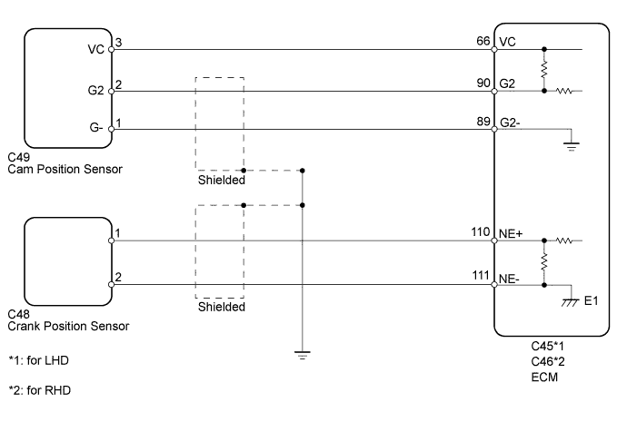
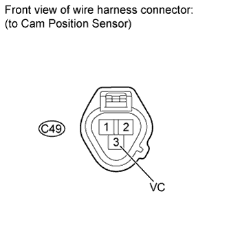
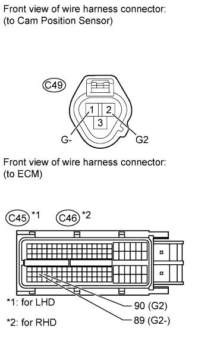

DTC P1340 Camshaft Position Sensor "A" (Bank 1 Sensor 2) |
DTC P1342 Camshaft Position Sensor "A" Low Input (MRE) |
DTC P1343 Camshaft Position Sensor "A" High Input (MRE) |
| DTC Code | DTC Detection Condition | Trouble Area |
| P1340 | No cam position sensor signal is sent to the ECM during cranking (2 trip detection logic). |
|
| No cam position sensor signal is sent to the ECM with an engine speed of 600 rpm or more. | ||
| P1342 | The output voltage of the camshaft position sensor is below 0.3 V for 4 seconds (1 trip detection logic). | |
| P1343 | The output voltage of the camshaft position sensor is higher than 4.7 V for 4 seconds (1 trip detection logic). |

| 1.INSPECT CAM POSITION SENSOR ASSEMBLY (SENSOR POWER SOURCE) |
 |
Disconnect the cam position sensor connector.
Measure the voltage according to the value(s) in the table below.
| Tester Connection | Switch Condition | Specified Condition |
| C49-3 (VC) - Body ground | Engine switch on (IG) | 4.5 to 5.0 V |
|
| ||||
| OK | |
| 2.CHECK HARNESS AND CONNECTOR (ECM - CAM POSITION SENSOR) |
 |
Disconnect the cam position sensor connector.
Disconnect the ECM connector.
Measure the resistance according to the value(s) in the table below.
| Tester Connection | Condition | Specified Condition |
| C49-2 (G2) - C45-90 (G2) | Always | Below 1 Ω |
| C49-1 (G-) - C45-89 (G2-) | Always | Below 1 Ω |
| C49-2 (G2) or C45-90 (G2) - Body ground | Always | 10 kΩ or higher |
| C49-1 (G-) or C45-89 (G2-) - Body ground | Always | 10 kΩ or higher |
| Tester Connection | Condition | Specified Condition |
| C49-2 (G2) - C46-90 (G2) | Always | Below 1 Ω |
| C49-1 (G-) - C46-89 (G2-) | Always | Below 1 Ω |
| C49-2 (G2) or C46-90 (G2) - Body ground | Always | 10 kΩ or higher |
| C49-1 (G-) or C46-89 (G2-) - Body ground | Always | 10 kΩ or higher |
|
| ||||
| OK | |
| 3.INSPECT SENSOR INSTALLATION |
 |
Check the cam position sensor installation.
|
| ||||
| OK | |
| 4.INSPECT CAMSHAFT TIMING PULLEY LH (SIGNAL PLATE TOOTH) |
Check the teeth of the signal plate.
|
| ||||
| OK | |
| 5.REPLACE CAM POSITION SENSOR ASSEMBLY |
Replace the cam position sensor (Click here).
| NEXT | |
| 6.CHECK WHETHER DTC OUTPUT RECURS |
Connect the intelligent tester to the DLC3.
Turn the engine switch on (IG).
Turn the tester on.
Clear DTCs (Click here).
Start the engine.
Enter the following menus: Powertrain / Engine and ECT / DTC.
Read DTCs.
| Result | Proceed to |
| No DTC is output | A |
| P1340, P1342 and/or P1343 is output | B |
|
| ||||
| A | ||
| ||